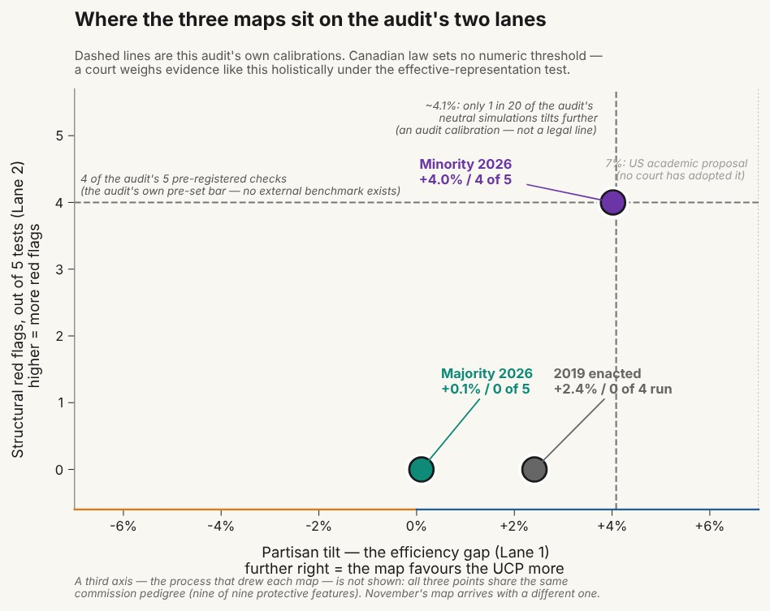

This week. The committee's map is due November 2. The audit registered its tests before that map existed (OSF registration qsgy8) and will publish the scoring within 72 hours, whichever way it points. The first check is the one the government chose: Recommendation 5.
What happened #
Every so often Alberta redraws its ridings, the districts that each elect one MLA. Where the lines fall decides whose votes add up to a seat and whose scatter.
On March 23, 2026 the independent commission doing the redraw split three to two and filed two maps. Both are legal under the Act. The majority map was written by the chair and the two commissioners the opposition nominated. The minority map was written by the two commissioners the government nominated. Both came from the same room, the same rules, the same 1,147 public submissions and the same data.
The majority map behaves like the maps a neutral process draws. The minority map does not:
- It splits Airdrie, a city of 85,805, into four districts, and leaves its residents a minority in every one.
- In north-east and central Calgary, where the NDP won thirteen of seventeen seats in 2023, it draws districts 11.5% above the provincial average.
- Hold the vote at a perfect tie and it gives the UCP 51.7% of the seats. Only 69 of 1,010,000 neutral maps give more.
- On 2023's actual votes it yields 60 of 89 seats for the UCP, against 55 on the majority map.
The Assembly adopted neither map. On April 21 it passed Government Motion 37, which handed the job to a committee of six MLAs: four UCP and two NDP, chaired by UCP MLA Brandon Lunty. The committee's 91-seat map is due November 2. Per CBC's reporting, there will be no public hearings on that map, and no draft will be released for the public to challenge first.
What we can say, and what we can't
- The minority map sits outside what 1.01 million neutral maps produce, in the UCP's favour.
- All four partisan-fairness measures point the same way.
- That any commissioner intended this. The audit reads outcomes, not motives.
- That the government directed its nominees. The audit found no evidence of coordination, and none can be inferred from appointment alone.
- That the pattern will recur. The map that carries it was never enacted. November tests whether it comes back.
- How a court would rule, or what the committee will choose.
On the word. Gerrymandering is a practice: drawing lines for partisan advantage. You recognise it by what a map does and by the evidence around how it was drawn. Canadian law has no offence by that name, which limits what a court will call it, not whether it happened. The law's closest test is effective representation under section 3 of the Charter, set out below.
Reading the cover map. The cover colours Alberta's 4,765 voting areas by how people in each one voted in 2023: orange where NDP votes are concentrated, blue where UCP votes are. The colour deepens only where many people live, so a voting area covering hundreds of square kilometres of parkland stays pale. The land west of Ponoka is pure white: no polling station, and no one recorded living or voting there. The lines drawn over the colour are the minority commission's 89 proposed districts. Open the map explorer to flip between all three maps.
What the minority map does #
The two maps agree on most of Alberta. Where they part, someone in the room had to make a choice. Here are the choices, and what each one does.
One city, four districts
Airdrie has 85,805 people (2024 municipal census), one council, one tax bill and one school division. The law caps each district at one-and-a-quarter times the provincial average, so Airdrie needs at least two districts. The majority map gives it two.
The minority map gives it four: north to Olds-Three Hills-Didsbury, east to Airdrie East, west to Calgary-Foothills-Airdrie West, and centre-south to Calgary-Airdrie. Each piece is attached to a different rural or Calgary-edge district, and Airdrie's residents are a minority in all four. The split meets every criterion of the audit's pre-registered cracking test. The majority's two-way split meets none.
Splitting a community thinly enough that it decides nothing is called cracking. Take a parent group at an Airdrie school that wants to raise school funding. It now needs four delegations to four MLAs, each answerable first to somewhere else.
Bigger districts where the NDP is strongest
In Calgary's north-east and central districts, where thirteen of seventeen seats went NDP in 2023, the minority map's divisions average 11.5% above the provincial population. The majority's average 2.8%. A bigger district means each vote in it weighs less. Concentrating one party's voters into fewer, larger districts is called packing, and this pattern meets the audit's pre-registered packing test.
The cost: equal votes
Equal district populations are the one value Alberta's statute puts a number on. By the commission's own population tables, the minority map's districts stray from the ideal size by 4,707 people on average, against the majority's 3,180: 48% wider. The audit's own measurement on the official map files tells the same story (3,938 against 2,827), and only about 1 in 100 neutral maps spreads its populations wider. The usual defence of odd lines, that they were needed to balance populations, runs backwards here.
Rural tails on urban districts
This audit does not say rural Alberta has too many seats. The Act lets district populations vary by up to 25%, so one rural MLA isn't representing a geography the size of southern France. Both maps keep that.
What the audit does say is that in several places on the minority map, rural communities become the tail of a district whose population centre is a city. Each of Airdrie's four pieces runs out into a different stretch of countryside, and in every one the population centre is the urban slice. That pattern repeats on the minority map in ways it does not on the majority.
Three boundaries the chair called out
The commission's own chair flagged three minority boundaries as geographically anomalous:
- the Rocky Mountain House–Banff Park extension into uninhabited national-park land;
- the lasso-shaped corridor of Calgary-Nolan Hill–Cochrane;
- the reach of Olds–Three Hills–Didsbury into north Airdrie.
The chair signed the majority report, so his criticism landing only on the minority is what you would expect. What gives it weight is that the audit's own blind geometric tests independently confirmed anomalous geometry for three of his four geometric flags.
He called the park extension "a bad faith effort" to claim a population protection, section 15(2), written for remote communities where people actually live. The audit's check undercuts that charge: the division qualifies under s.15(2) even without the extension. Placing the Banff townsite with Canmore has sound community-of-interest logic, because the town sits inside a federal park it cannot grow into. The chair's objection still stands against the empty-park extension, which the townsite's placement does not touch.
What it buys
Hold the province at a perfectly tied vote and ask each map how many seats the UCP gets:
- the median neutral map gives 44.8%;
- the majority map gives 46.1%, the 78th percentile;
- the minority map gives 51.7%, the 99.99th percentile, and only 69 of 1,010,000 neutral maps exceed it.
On the minority map the UCP holds the 45 seats a majority needs down to a vote share of about 49.7%. On the majority map it would need to win the popular vote by about 4 points. On 2023's actual votes the minority map yields 60 of 89 seats, against 55.
Sixty seats is a two-thirds majority, and in Alberta that threshold unlocks no special power. A bare majority can already pass laws and budgets, invoke closure, change the rules of the House and set every committee's membership. What sixty buys is margin: a government a handful of floor-crossings cannot threaten, facing an opposition too small to force recorded divisions or sustain committee scrutiny.
None of these choices breaks Alberta's statute. The Act permits splitting cities, and every district on both maps sits inside the ±25% band. Canadian law has no rule against partisan advantage as such. Its test is whether voters get effective representation.
What the law requires, and what it doesn't #
The Constitution
Section 3 of the Charter gives every citizen the right to vote, which the Supreme Court of Canada reads as a right to effective representation. Roughly equal voting power is the starting point, a "prime condition", though strict equality is not required. A district can be larger or smaller for a real reason, such as geography, community history, shared local interests or a minority community's voice, and the gap has to be justified.
The courts' test is deferential. They ask whether reasonable people, applying those principles, could have drawn the lines this way. And no government can switch the right off, because the notwithstanding clause does not reach section 3.
Courts have also looked at how a map gets made. In 2017 Nova Scotia's Court of Appeal found the province's map violated section 3. The government had directed its independent commission to change course, so the final map did not reflect the commission's own view. The court added that a legislature may still draw a map itself.
In 2026 the Supreme Court of Canada struck down a Quebec law that paused Quebec's commission to protect ridings in the Gaspésie (Quebec (AG) v. Lalande, 2026 SCC 13, 7–2, reasons May 1). Quebec could have protected them more narrowly, and a unanimous vote did not save the law. On June 12, 2026 Quebec's National Assembly passed its own 127-seat map.
Alberta's statute
The Electoral Boundaries Commission Act sets the commission's rules:
- Who sits. A chair appointed by cabinet from eligible roles that include judges. Four non-MLA members, two nominated by the Premier and two by the Opposition, appointed by the Speaker.
- Hearings. Public hearings before and after its draft map.
- Deadlines. A draft within seven months, and a final report within five months after that.
- Seats. 89. Bill 32, introduced April 23, 2026, would make it 91. Its passage has not been confirmed.
- Population. Every division within 25% of the average. Up to four remote divisions may go as low as 50% below, if the commission finds at least three of five criteria met.
- Factors. The commission must consider effective representation, and may weigh growth, communities of interest, geography and other factors.
Both commission maps fit inside these rules.
What the law doesn't require
Most of that rulebook is addressed to "the Commission". Read plainly, it binds neither the Legislature nor a committee of MLAs unless the committee's motion adopts it. Whether Government Motion 37 does is not public.
- The Legislature need not adopt a commission's map. A report becomes law only if MLAs pass a bill.
- No provision found requires a committee of MLAs to hold hearings, be independent, publish a draft or explain its choices. Government Motion 37 reportedly says the review is expedited and does not require public hearings.
- Recommendation 5, which the government cited, binds no one.
- Elections Alberta says it needs at least a year and a half to prepare new ridings. That is a planning need. No law sets it as a deadline.
- Courts do not review a law while it is being made. A challenge comes only once a boundaries law passes.
It has happened here before
In 1992 Alberta's commission deadlocked over mixed urban–rural ridings. On July 2, 1992 the Assembly passed Motion 24, handing the work to a Select Special Committee of MLAs chaired by Bob Bogle. The Opposition refused to appoint members, so four Progressive Conservative MLAs drew the map. It was used in the 1993 election.
In 1994 the Court of Appeal upheld that map under the Charter and faulted how it was made. The committee's members could not explain several of its boundaries and district populations, and one of the smallest districts was Bogle's own. The court said a proper review was needed before the Legislature's term ran out. In 1995 the Legislature rewrote the Act and created the commission model used ever since. The institution set aside in 2026 is the one Alberta built after the last time MLAs drew the map.
What this means in November
Lawful does not mean beyond challenge. The committee's map faces the same test as any map: effective representation, with every population gap justified. Reasons matter, and Alberta's Court of Appeal criticised the last committee-drawn map for lacking them. This audit scores the map and the process. Whether it is constitutional is for a court.
How it got here: the pen moved #
The commission did its work in public. It held hearings in sixteen communities, received 1,147 written submissions, and reversed its own interim proposal on the strength of 80-plus of them.
Four weeks after the split, Government Motion 37, introduced April 16 and passed April 21, 2026, created a committee of six MLAs:
- four UCP: Brandon Lunty (chair), de Jonge, Sawyer and Wiebe;
- two NDP: Ganley and Gray.
The committee oversees an Independent Advisory Panel, which produces the 91-seat proposal. In June the committee appointed four panel members: the Hon. Monte Solberg and Darwin Durnie, nominated by the Premier, and Dr. Gerard Kennedy and Brent Robinson, nominated by the Opposition.
Alberta's acting chief justice declined the committee's request to help find a judge to chair the panel, citing "the irregularity of this process". The Alberta branch of the Canadian Bar Association and the Law Society of Alberta also declined to take part. Retired Court of Appeal justice Brian O'Ferrall was later named chair. The panel advises, and the MLAs decide. The committee's UCP members also declined to release the submissions the committee received, citing privileged information. An NDP amendment to release them with privileged material removed was defeated 3–2 (per the committee's meeting video, week of October 22, 2026; transcript citation pending). The panel was due to report to the committee by October 22. As of October 29 there was no public sign that it had.
Two public claims called this unprecedented. Opposition Leader Naheed Nenshi said in April: "This had never been done before in Alberta history." In May, Duane Bratt, Professor of Political Science at Mount Royal University, described the process to the author as without precedent in Canada, and this site repeated it. Both claims are wrong. Alberta did it in 1992: a deadlocked commission's work went to a committee of MLAs, PC members alone drew the map after the Opposition refused to take part, and the Court of Appeal later criticised the result. This site's error was the review's scope, which never looked at Alberta's own 1992 cycle.
What is new in 2026 is narrower. The commission did not deadlock: a majority signed a report, and under the Act a majority report is the commission's report. It was set aside anyway.
On the floor, the government presented its route as fidelity to the commission: "We are adopting the recommendations from the report" (Government House Leader, Hansard, April 16, 2026). The opposition called it "retaliation against the independent Electoral [Boundaries Commission]." The report itself narrows the government's claim. The majority asked the Legislature to adopt its 89-seat map, and the one recommendation that proposed 91 seats was the chair's alone.
Every step was lawful. What changed is who holds the pen: the MLAs who approve this map will run under it. Nothing prevents the next government, of any party, from citing this cycle as precedent.
Recommendation 5: the yardstick the government chose
The government justified taking the pen with one recommendation from the commission's report, which makes it the first thing to check when the committee's map lands. Recommendation 5 was written by one commissioner, the chair, Justice Dallas Miller, in an addendum to the majority report: "My majority colleagues do not agree with me on this point. That is why I am alone in making this recommendation" (final report, p. 66). He stated its purpose as well: it "is formulated for the express purpose of dissuading the Legislature from accepting the minority report."
It is a fallback, and it is specific. If the Legislature would not accept the majority's choice to remove two divisions outside Edmonton and Calgary, the chair asked it to amend the Electoral Divisions Act from 89 seats to 91, restore those two divisions, and keep "the rest of the province as we propose" (the majority map) "to the extent possible." Restoring the two divisions should:
- (a) Leave Airdrie and the south alone. No change to any division in Airdrie, or with any land south of Airdrie's southern city limit, except Drumheller-Stettler. On the majority map that is 41 divisions: both Airdrie seats, all 28 Calgary seats, and the 11 divisions around and south of Calgary.
- (b) Leave north Edmonton alone. No change to any Edmonton division north of the North Saskatchewan River: 11 divisions on the majority map.
- (c) Put south Edmonton back. Every Edmonton division south of the river returns to the commission's October 2025 interim map, the draft it published for comment before the final split. The committee may add Nisku to Edmonton-South East if it wants Leduc and Beaumont back in one division. That is 10 divisions.
- (d) Consider a Clearwater seat. Consider restoring a division made mostly of Clearwater County and western Mountain View County, with s.15(2) status. This is the only restored seat the recommendation places. It names no place for the second.
Together, the conditions close off most of the ground the commission split over. Airdrie, Calgary, Cochrane and Chestermere, home to the four-way Airdrie split and the Calgary-edge hybrids, all fall inside condition (a). Red Deer and St. Albert are covered only by the softer clause, "to the extent possible." A map that reopens Airdrie or Calgary may still be lawful, but it is not the map Recommendation 5 describes. Government Motion 37 itself reportedly lets the panel apply the recommendation "subject to any modifications the independent advisory panel considers necessary." The map explorer shades the two areas Recommendation 5 changes and draws a dashed line around the two it leaves alone.
How we know #
The what-if machine
A computer drew 1,010,000 legal Alberta maps from the official Elections Alberta files, each keeping its districts within the population band and in one piece. The method, ReCom, is the field's standard: merge two neighbouring districts, split the result at random into two new legal ones, and repeat. The computer never sees a vote. A real map's percentile among the million shows how far into the tail it sits.
The audit's commitments are filed on the Open Science Framework. Its random seeds were locked to a public beacon before the official map files existed, and each finding is labelled pre-registered or exploratory on the Methods page.
In Alberta, neutral is not 50/50
Rural UCP voters win their ridings by wide 60-40 margins, wasting many extra votes; urban NDP voters win theirs by tighter 51-49 margins. So at a perfectly tied vote, the median neutral map gives the UCP only 44.8% of seats. That baseline is what both maps are measured against.
The results, side by side
| Test | Majority map | Minority map |
|---|---|---|
| Follows municipal lines (Canadian norm 70–85%) | 80%: within norm | 72%: within norm |
| Population spread from ideal size (commission tables) | 3,180 | 4,707: 48% wider |
| NE/central Calgary districts above provincial average | 2.8% | 11.5% |
| Boundaries flagged by the commission's chair | 0 | 3 |
| Airdrie split (legal minimum: 2) | 2 pieces | 4 pieces |
| Pre-registered structural summary (4 of 5 or more = outlier) | 0 of 5 | 4 of 5 (the fifth, anchoring, is neutral for both maps) |
| UCP seat share at a tied vote (neutral median 44.8%) | 46.1% (78th percentile) | 51.7% (99.99th percentile; 69 of 1,010,000 exceed it) |
| Mean-median gap | 1st percentile: an outlier, but leaning the NDP's way, the wrong direction to help the UCP | deeper in the tail than 99.97% of neutral maps, leaning the UCP's way |
| Declination (a second lopsidedness measure) | 22nd percentile: inside the normal range | deeper in the tail than 98.8%, leaning the UCP's way |
| Efficiency gap (pre-set line about +4.1%) | +0.1% (16th percentile) | +4.0% (94.5th percentile): a miss |
| UCP seats on 2023 votes | 55 of 89 | 60 of 89 |
| Odds of this profile under neutral drawing | n/a | at most about 1 in 568,000 |
The structural tests use geometry only, and all five were pre-registered on April 24, 2026, before the final simulation results were compiled. The 2019 enacted map sits beside the majority, at a 46.0% tied-vote seat share (78th percentile).

What "1 in 568,000" means
The chance that a neutral process produces the minority map's combined profile across the four fairness measures is at most about 1 in 568,000 (p ≤ 1.76×10⁻⁶, a Bonferroni-corrected, dependence-robust upper bound). The audit doubled its raw figure because it looked in two places, so the true odds are at most this common, and likely rarer.
The figure is not the probability the map is innocent. Confusing the two is the prosecutor's fallacy. A map this rare can still come from unusual but honest judgment. The audit claims only that routine drafting variation is not a plausible explanation.
Did the result survive attack?
The audit swapped the simulation's engine for a structurally different one, a spanning-forest sampler registered in advance at OSF (he53s) and run on 2026-07-10. Every metric's percentile moved by less than one point. An independent implementation, the R redist package, had been unstable on the old provisional geometry. On the official files it also found zero plans reaching the minority's value.
What the machine can't see
The simulation enforces population and contiguity, not every rule the commission weighed (s.15(2), community of interest, municipal anchoring). It is a strong outside check, not a list of every map a lawful commission might draw, so the geometry tests, which use no simulation, carry most of the weight. The tied-vote test isolates what a map contributes. A big enough swing in a real election can still swamp any map's lean.
Where the audit lost
These results ran against the story. All of them stay on the record.
- The anchoring finding was retracted. Early tracings from commission PDF images showed the minority map following municipal lines only 15% of the time. On the official files it is 72%, against the majority's 80%; both are inside the 70–85% Canadian norm.
- The efficiency gap missed. The minority came in at +4.0%, the 94.5th percentile. The pre-registered line was the 95th (about +4.1%), so it is reported as a miss.
- The mechanism test failed. The audit tested whether the flagged shapes produce the seat advantage. On its test, they do not. The shapes and the seat numbers point at the same map; the link between them did not survive.
- The minority passed one test outright. On neighbour-drain, which looks for packed districts beside thin-margin ones, it shows 1 coupled signal, against the majority's 2 and the 2019 map's 5.
- Two statistics were retired. The Swing-Zone Allocation Test fell from p = 0.0024 to p ≈ 0.19 once corrected for neighbouring areas voting alike; it was retired on 2026-06-13. The one-in-fifteen-million headline combined two channels that were not independent; it was retired on 2026-06-10.
Both sides tested
Every written accusation from either side was run through the same tests. None of these checks was set up in advance, so they carry less weight than the five structural tests, and every number behind them is public.
| The accusation | Who made it | What the audit found |
|---|---|---|
| Three of the minority's boundaries are geometrically anomalous | The chair (majority report) | Largely confirmed: the audit's blind tests independently confirmed three of the chair's four geometric flags; the fourth fell below threshold |
| The minority's seven contested configurations had "no public support" | The chair (Appendix C) | Overbroad: right on three of seven, wrong on three, partially wrong on one |
| The park extension was "a bad faith effort" to claim s.15(2) protection | The chair (final report, p. 10) | Undercut: the division qualifies under s.15(2) even without the flagged extension |
| The majority "delete[s] or mangle[s] rural electoral divisions" | The minority (p. 356) | Reversed: the minority keeps fewer rural-anchored divisions (23 vs 28, against 2019's 31) and absorbs more into city-named districts (7 vs 3) |
| The majority "decline[d] to use" the ±25% flexibility in rural Alberta | The minority (p. 356) | Supported: majority rural divisions average −6.0% deviation (4 below −10%); the minority's average −12.2% (11 below −10%) |
| "Substantial and consistent testimony" for hybrids was ignored | The minority (p. 356) | Overbroad: support was configuration-specific, documented for three of seven hybrid configurations and absent for three |
| The majority's rural districts are engineered corridors of isolation | The audit's own counter-hypothesis (T3.2) | Not supported: the geographic explanation held, and the majority cleared |
The minority's published reasons for its contested lines mostly fail on public data: five of six do not survive independent check. Usually the general claim is true and the specific line is not. About a third of Cochrane's workers commute somewhere in Calgary, which says nothing about the Nolan Hill neighbourhood the corridor reaches. The majority published no such list, so this check runs one way only. Together, the minority's two charges against the majority describe two design philosophies: more-but-fuller rural divisions on the majority, fewer-but-lighter on the minority.
Who did this
One author, a self-funded student at Mount Royal University, who has voted for and donated to both conservative and progressive provincial parties (details under About me). Findings that ran against his expectation stay on the record, and every number reproduces from public code, public data and random seeds committed in public before the analysis ran.
The full record
All fourteen findings are on the full record, each with its numbers, what it could show, what Canadian practice expects and what the law does with it. Each links to a one-concept explainer on the explainers page.
The November test #
The committee's 91-seat map is due November 2, 2026. The audit's November tests were registered (OSF registration qsgy8) before the committee's map existed. The scoring runs within 72 hours of the map's release, whichever way it points.
The process. Were public hearings held? Was a draft released? Are the advisory panel's members and terms of reference published? Is the record behind the map public? The committee has kept its submissions private, so the reasons for its lines can be scored only from what its report publishes. The process also gets its own nine-feature scorecard, published in draft on the norms page. Four of the committee's failing cells are features it can still add before it reports.
Recommendation 5. Test X1 scores the committee's map against the chair's four conditions, one at a time:
- (a), (b) and (c) pass if the map leaves those divisions as described.
- (d) asks only that a Clearwater seat be considered, so it is scored on evidenced consideration. It passes if the map contains the division, or if the committee's published report names the option and gives a reason for adopting or declining it. With the submissions withheld, the report is the only record that counts. Silence or boilerplate fails.
X1 passes only if all four do. A strict reading, which fails (d) unless the seat exists, is reported alongside. Recommendation 5 binds no one in law. This is a test of whether the committee delivered what the government cited.
The map. Where does it land on every measure on this page, against the same million-map distribution and under the same pre-registered thresholds?
What each outcome means. Suppose the committee's map repeats the minority map's pattern, drawn by different people under different constraints on a different timeline. Then the structural finding earns confirmatory status. If it lands inside the neutral bands, the finding stands as an isolated observation about one map that was never enacted, and this page will say exactly that. Either way, you will not have to trust this audit's judgment, only its arithmetic, which is public and reproducible by anyone.
What would change our mind #
Every finding carries a condition, written in advance, that would retract it. If one is met, the retraction is public within 30 days.
- Someone draws a better-justified map. Suppose anyone produces a legal Alberta map that satisfies the minority's own stated reasons for Airdrie, Cochrane, Nolan Hill and Rocky Mountain House–Banff Park, and follows municipal lines at rates comparable to the majority's. Then the finding that those boundaries can't be explained by their stated reasons is retracted. The challenge is open at Issue #14.
- A document shows the reasons came first. If an internal commission document, dated before the minority's final choices, shows those choices were driven by community submissions the audit has not seen, the inference that they were drafting decisions is retracted.
- The neighbour-drain pass proves to be an artefact. If the continuous version of that score falls in the extreme upper tail (p < 0.05) of random permutations, the minority's pass is withdrawn.
- An election contradicts the simulation. If the 2027 election is fought on either commission map and the actual seat split contradicts the projection from 2023 votes, the simulation's percentile findings are revisited against actual results.
- A court distinguishes Lalande. In Quebec (AG) v. Lalande, 2026 SCC 13, the Supreme Court struck down Quebec's law pausing its commission. Quebec then legislated its own map. Suppose a court reviewing Alberta's route finds it constitutionally distinct, for example because handing a finished commission's work to an MLA committee differs from freezing a commission mid-process. Then the argument on the norms page that the two sit in the same class is retracted.
The November map can weaken the overall conclusion too, as set out above. This audit corrects in public and deletes nothing. The complete ledger of every correction is in the academic report's Documented Corrections section.
References and Methodology #
The underlying methodology draws on established political science, statistics, and legal literature. Full citations follow American Political Science Association (APSA) style; court cases follow Canadian legal convention. The complete reference list appears in the technical report. Key sources are listed here.
Academic literature
- Alberta Electoral Boundaries Commission. 2026. 2025–26 Electoral Boundaries Commission Final Report (Majority and Minority). Government of Alberta.
- Chen, Jowei, and Jonathan Rodden. 2013. "Unintentional Gerrymandering: Political Geography and Electoral Bias in Legislatures." Quarterly Journal of Political Science 8(3): 239–269.
- Courtney, John C. 2001. Commissioned Ridings: Designing Canada's Electoral Districts. Montreal and Kingston: McGill-Queen's University Press.
- DeFord, Daryl, Moon Duchin, and Justin Solomon. 2021. "Recombination: A Family of Markov Chains for Redistricting." Harvard Data Science Review 3(1). (The ReCom algorithm used to generate the 1,010,000-map ensemble.)
- Gelman, Andrew, and Gary King. 1994. "A Unified Method of Evaluating Electoral Systems and Redistricting Plans." American Journal of Political Science 38(2): 514–554.
- Katz, Jonathan N., Gary King, and Elizabeth Rosenblatt. 2020. "Theoretical Foundations and Empirical Evaluations of Partisan Fairness in District-Based Democracies." American Political Science Review 114(1): 164–178.
- Pal, Michael. 2015. "The Fractured Right to Vote." McGill Law Journal 61(2): 231–274. (Canadian constitutional framework for electoral boundaries.)
- Stephanopoulos, Nicholas O., and Eric M. McGhee. 2015. "Partisan Gerrymandering and the Efficiency Gap." University of Chicago Law Review 82(2): 831–900. (Source of the efficiency gap measure used throughout.)
Court cases
- Reference re Provincial Electoral Boundaries (Saskatchewan), [1991] 2 SCR 158. (The leading Supreme Court of Canada authority on the constitutional standard for electoral boundary drawing.)
- Raîche v. Canada (Attorney General), 2004 FC 679. (Federal Court; leading Canadian authority on community-of-interest evidence in electoral boundary disputes.)
- Rucho v. Common Cause, 139 S. Ct. 2484 (2019). (U.S. Supreme Court; establishes the non-justiciability of partisan gerrymandering claims in federal courts — context for why Canada's s.3 effective-representation standard differs.)
Statutes
- Electoral Boundaries Commission Act, RSA 2000, c E-3.
Reports and code #
- Plain Language Full public report — Long-form, with maps, for general readers
- Summary Summary of findings — Plain-language overview, explains every concept from scratch
- Academic Technical report — Full methods and citations for researchers
- Notebook Interactive notebook — Run the charts yourself in your browser, no install needed
- Code github.com/Ixby/alberta-electoral-boundaries-audit
About me
I'm a student at Mount Royal University. I did this research on my own: it was not assigned as coursework, and the university did not commission it. My views are my own and do not represent the university. I have no connection to Elections Alberta or the commission. I've voted for and donated to both conservative and progressive provincial parties in Alberta as an adult, and I have volunteered for the NDP.
My political history could affect how I look at this issue, and the main protection against that is the method. I tested both maps the same way, registered my tests in public, time-stamped records, labelled every finding pre-registered or exploratory, and put everything online so anyone can check my work. I paid for this research myself. If you find something I got wrong, I want to know.
Seed-commitment and pre-registration records: OSF:6pt83, AsPredicted:#289,469, AsPredicted:#289,451 — the random seeds were time-stamped to a public beacon before the official shapefiles were released; the neighbour-drain test (#289,451) was registered before measurement, the others filed alongside exploratory analysis.
Questions or corrections: Send feedback